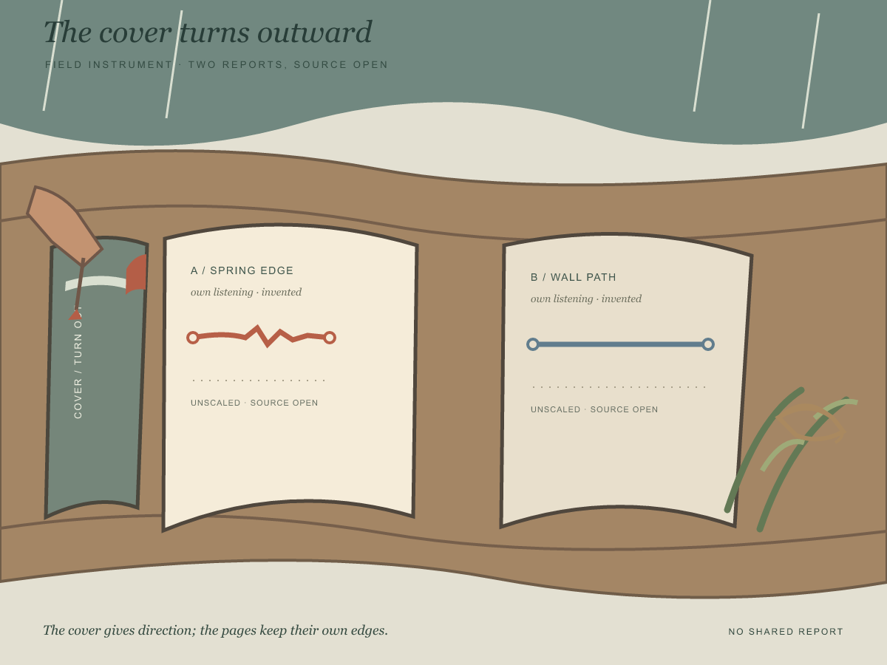
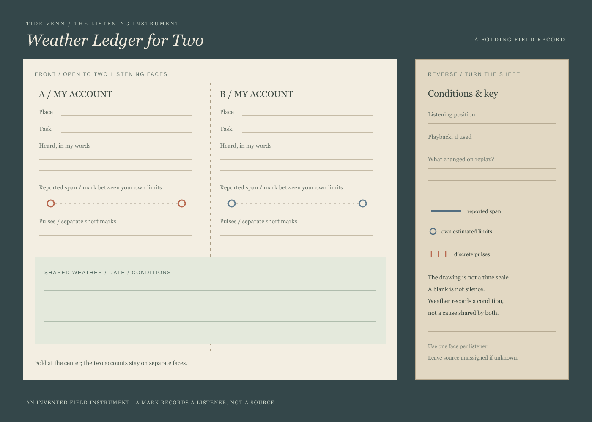
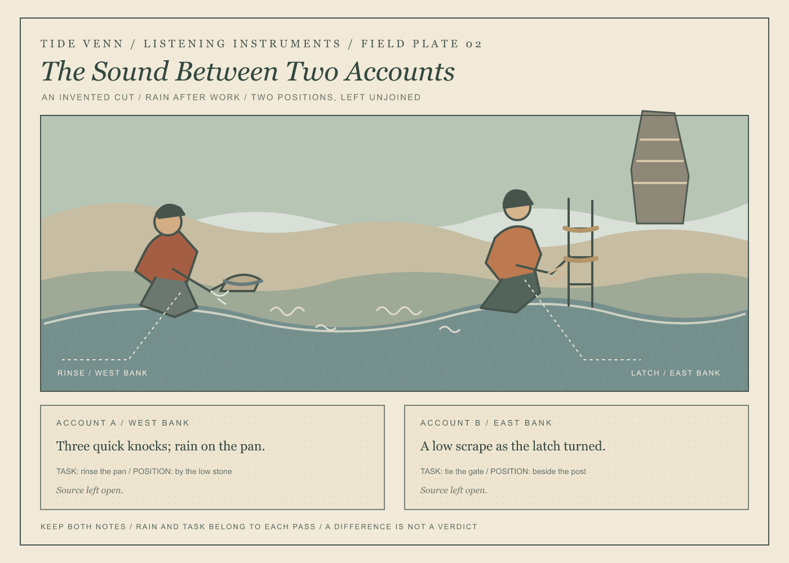

The cover turns outward
An outer turn cue leads into two independent listening reports; the source remains open.
Paper instruments and field plates for keeping observation, memory, and inference in their proper places.
Two listening reports on shared ground, followed by a ledger for making your own.

An outer turn cue leads into two independent listening reports; the source remains open.

A folding field instrument for two independent reports and their listening conditions.

Two listening spans on one weathered backing, with their limits kept distinct.

Two ordinary tasks, two records, and no assigned source.

A one-sided paper record for a sound that may return, alter, or remain unexplained.

A paper record that keeps a first account intact and gives each later search its own limit.

An optional paper tag for carrying a report's source and limits when a reader chooses to share it.